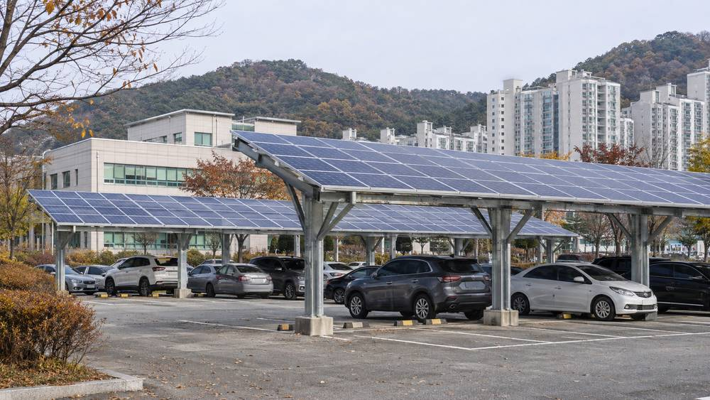

김해시의회 태양광 시민토론회, 공영주차장·학교·산단 설치 가능 부지 조사 제안

11월 16일 토론회서 수익 지역 환원·주민참여·안전 유지관리 기준 논의, 발제자는 김해 주차장 태양광 잠재량이 경남 2위라고 밝혀
경남 김해시의회가 11월 16일 시의회 1층 특별위원회실에서 '기후위기시대 김해시 태양광 활성화를 위한 시민토론회'를 열었다. 행정자치위원회와 고옥자 시의원이 주관한 이 자리에서는 공영주차장·학교·산업단지 공공건물의 태양광 확대와 발전수익의 주민 환원 방안이 논의됐다.
발제에 나선 정진영 김해환경운동연합 사무국장은 김해가 경남 18개 시·군 가운데 전력 사용량과 주차장 태양광 잠재량 모두 2위라고 밝혔다. 그는 공공주차장과 학교, 산업단지 공공건물에서 설치 가능한 장소부터 조사하고, 시민햇빛발전협동조합 같은 주민참여 방식과 시설 안전·유지관리 기준을 함께 마련하자고 제안했다. 권우현 중앙환경운동연합 책임활동가는 발전 수익이 지역사회로 돌아가도록 하는 제도적 장치가 필요하다고 말했다.
논의의 배경은 공영주차장 재생에너지 설비 설치 의무다. 한국에너지공단 신재생에너지센터 안내에 따르면 국가·지방자치단체·공공기관 등이 운영하는 주차구획 면적 1,000㎡ 이상 주차장이 대상이다. 설치 용량은 설비를 놓기 어려운 면적을 뺀 유효 주차구획 면적 10㎡당 1kW로 계산한다(제외 면적이 없다면 1,000㎡ 주차장은 100kW). 이날 지정토론에는 박주병 진례 초전마을 이장, 성소희 전략산업과장, 이치균 기후대응과장, 이연정 김해연구원 경제산업연구부장이 참여해 햇빛소득마을 사례와 무탄소 발전 확대 방향을 다뤘다.
출처: 중도일보 2026-11-16 김성욱 원문 보기
출처: 한국에너지공단 신재생에너지센터 게시일 표기 없음(2026-11-18 열람) 공영주차장 재생e 설비 설치의무화제도 안내 원문 보기
金海市議会の太陽光市民討論会、公営駐車場・学校・産業団地の設置可能用地の調査を提案
11月16日の討論会で収益の地域還元・住民参加・安全維持管理基準を議論、発題者は金海の駐車場太陽光ポテンシャルが慶尚南道2位と説明
韓国・慶尚南道の金海市議会は11月16日、市議会1階の特別委員会室で「気候危機時代の金海市太陽光活性化のための市民討論会」を開いた。行政自治委員会と高玉子（コ・オクジャ）市議が主管したこの場では、公営駐車場・学校・産業団地の公共建物での太陽光拡大と、発電収益の住民還元策が議論された。
発題に立った鄭鎮栄（チョン・ジニョン）金海環境運動連合事務局長は、金海が慶尚南道18市郡のうち電力使用量と駐車場太陽光ポテンシャルがともに2位だと述べた。同氏は、公共駐車場、学校、産業団地の公共建物で設置可能な場所から調査し、市民太陽光発電協同組合のような住民参加方式と施設の安全・維持管理基準をあわせて整えようと提案した。権又鉉（クォン・ウヒョン）中央環境運動連合責任活動家は、発電収益が地域社会に戻る制度的な仕組みが必要だと語った。
議論の背景は公営駐車場への再生可能エネルギー設備の設置義務だ。韓国エネルギー公団の新再生エネルギーセンターの案内によると、国・地方自治体・公共機関などが運営する駐車区画面積1,000㎡以上の駐車場が対象である。設置容量は、設備の設置が難しい面積を除いた有効駐車区画面積10㎡あたり1kWで計算する（除外面積がなければ1,000㎡の駐車場は100kW）。この日の指定討論には、珍礼面チョジョン村の里長、市の戦略産業課長と気候対応課長、金海研究院の経済産業研究部長が参加し、「日差し所得村」の事例と無炭素電源の拡大方向を取り上げた。
金海市议会光伏市民讨论会提议调查公营停车场、学校和产业园区的可安装用地
11月16日讨论会议及收益回馈地区、居民参与和安全运维标准，发言人称金海停车场光伏潜力居庆尚南道第二
韩国庆尚南道金海市议会11月16日在市议会一楼特别委员会室举行"气候危机时代金海市光伏活化市民讨论会"。这场由行政自治委员会和高玉子市议员主办的讨论会，议题包括在公营停车场、学校和产业园区公共建筑上扩大光伏，以及把发电收益返还给居民的方案。
担任发言人的金海环境运动联合会事务局长郑镇英表示，金海的用电量和停车场光伏潜力均居庆尚南道18个市郡第二。他提议先调查公共停车场、学校和产业园区公共建筑中可安装的场所，同时制定市民光伏合作社等居民参与方式以及设施安全、运维标准。中央环境运动联合会责任活动家权又铉说，需要有让发电收益回到地区社会的制度性机制。
讨论的背景是公营停车场的可再生能源设备安装义务。据韩国能源公团新再生能源中心的介绍，对象是国家、地方自治团体、公共机构等运营的停车区划面积1,000平方米以上的停车场。安装容量按扣除难以安装设备的面积后的有效停车区划面积每10平方米1千瓦计算（若无扣除面积，1,000平方米的停车场为100千瓦）。当天的指定讨论有珍礼面初田村村长、市战略产业科长和气候应对科长、金海研究院经济产业研究部长参加，谈到"阳光收益村"案例和无碳发电的扩大方向。
Gimhae council solar forum proposes surveying sites at public car parks, schools and industrial parks
Nov. 16 forum covers returning revenue locally, resident participation and safety and maintenance standards; a speaker says Gimhae ranks second in the province for car-park solar potential
The Gimhae City Council in South Gyeongsang Province held a citizens' forum on expanding solar power in the climate-crisis era on Nov. 16 in the Special Committee Room on the council's first floor. Hosted by the Administration and Autonomy Committee and council member Ko Ok-ja, the forum discussed adding solar to public car parks, schools and public buildings in industrial parks, and returning the generation revenue to residents.
Jeong Jin-young, secretary-general of the Gimhae Federation for Environmental Movement, said Gimhae ranks second among the province's 18 cities and counties in both electricity use and car-park solar potential. He proposed surveying possible sites at public car parks, schools and industrial-park buildings first, and setting up resident-participation models such as citizen solar cooperatives together with safety and maintenance standards. Kwon Woo-hyun, a lead activist at the Korea Federation for Environmental Movements, said institutional mechanisms are needed so that generation revenue flows back to the local community.
The background is the requirement to install renewable energy equipment at public car parks. According to the Korea Energy Agency's New and Renewable Energy Center, it covers car parks with a parking area of 1,000 square meters or more operated by the state, local governments and public institutions. Capacity is calculated at 1 kW per 10 square meters of effective parking area, after excluding areas where installation is impractical (100 kW for a 1,000-square-meter car park with no excluded area). The panel discussion that day included the head of Jinrye-myeon's Chojeon village, the city's strategic industry and climate response chiefs, and a Gimhae Research Institute department head, who covered sunlight-income village cases and expanding carbon-free power.